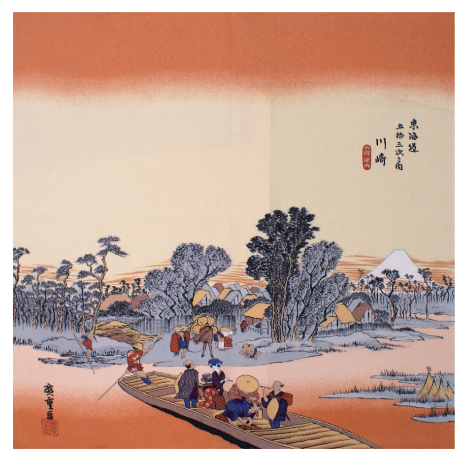

-

-

- 
Vêtements
Les vêtements sont une de mes passions. J'apprécie de voir des looks loufoques, inspirants, novateurs, colorés, décalés. Ces looks m'inspirent également et peuvent apporter et marquer. Je tiens donc à parler de quelques personnalités, marques... qui font partie de mes inspirations. Tout d'abord, un magazine mensuel qui a vu le jour en 1997 au Japon, FRUiTS Magazine. Ce magazine vient tout droit du photographe Shoichi Aoki. Le concept de celui-ci est simple, prendre des passants dont le look est intéressant en photo avec les références des vêtements. Toutes sortes de profils et de tenues plus loufoques les unes que les autres ont donc été capturés. Ces looks en valent le détour et continuent d'en inspirer plus d'un.
Musique
La musique, une discipline qui permet de transmettre des émotions, des ressentis et mille autres choses. Elle est au coeur de nos vies. Je vais ici présenter des artistes qui m'intéressent non pas seulement par leur musique mais également sur leur esthétique visuel dans leur clip musicaux. En premier me vient à l'esprit Balming Tiger, un groupe de musique coréen. Leurs visuels sont toujours intérsssants avec un côté parfois psychédélique, travaillés mais toujours créatif. J'aime ce côté expérimental et leur cadrage. Je pense aussi à Swervy avec le clip "Art Gang Money" qui m'impressionne et me rend vraiment curieuse du procédé derrière. Je continue sur un groupe français qui ont un esthétique qui fait également leur charme, en plus de leur musique, L'Impératrice. Pour le groupe L'Impératrice, j'ai bien aimé par exemple le clip "Afraid of Girls", avec un décor qui fait penser à la décoration épuré et futuriste du film Mon oncle de Jecques Tati. Er les looks très années 70 de la chanteuse qui rappelle une Jane Fonda dans Barbarella.
Cinéma
Je voulais parler un peu de l'âge d'or d'Hollywood, c'est à dire des années ?? à ??. Les films, comédies musicales fait à cette période-là était toujours brillant de créativité et grandiloquant ??????? entre les costumes et les décors, toujours plus impressionnant. Les acteurs étaient souvent polyvalents, de la danse au chant car les comédies musicales se faisaient bcp.
Photographie
Parmi de nombreuses images statiques peuvent se cacher une imagination débordante. La photographie est un domaine qui comme les clips musicaux ou les films créée une ambiance, un décor, un univers. Ce que j'aime tout particulièrement dans cet art est également les jeux de couleurs. Je vais donc vous présenter sans plus tarder des photographes. En premier, un des premiers photographes qui a été un coup de coeur pour moi, Leo Berne. Réalisateur et photographe parisien, il fait beaucoup de clichés argentiques au fil de ses souvenirs. Enfin, je tiens à parler d'un collectif de deux artistes, @helenetchen & @marylou_san, qui ont créée NoDrama Studio, studio de création digitale. Elles ne se limitent pas à de la photographie mais c'est cet aspect là qui va nous intéresser ici. J'apprécie particulièrement leurs photographies qui recourent à des jeux de lumières, des tenues inspirantes et de la diversité dans les modèles. C'est toujours un plaisir que de contempler leur travail.
Jeux vidéo
Petit paragraphe pour parler d'un type de jeux vidéo qui me fascine esthétiquement parlant et m'inspire. Ce type de jeux vidéo se nomme PC-98 (de son nom complet NEC PC-9801) puisqu'ils sont conçus pour marcher sur le micro-ordinateur du même nom. Le PC-98 a été créé par NEC en 1982, c'est un produit japonais. Les jeux PC-98 utilise du Pixel Art en tant que graphismes et se jouent pour la plupart comme un visual novel.